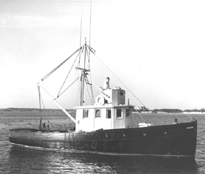

 copyright - WHOI |
|
Named for the local starfish, Asterias was built of white and southern hard pine and was similar in design to commercial fishing boats of the era. The Asterias and the Atlantis were built as the Institution's first vessels.
The first Asterias made at least 10,000 short trips, from Maine to New York, primarily for the testing of scientific gear. Nearly every member of the scientific and technical staff had a need for Asterias at some time. Her excellent design and construction made her a natural seaboat.
Asterias was sold to Ocean Research Engineering in1980. In 1985
Edwin Athearn, her former captain saved her from destruction and together
with Dave Lewis restored the ship's name and condition.